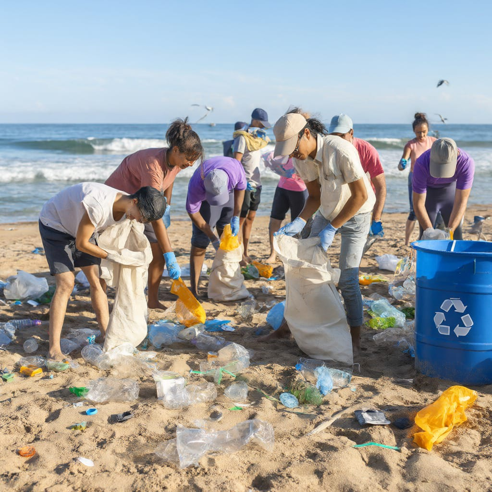
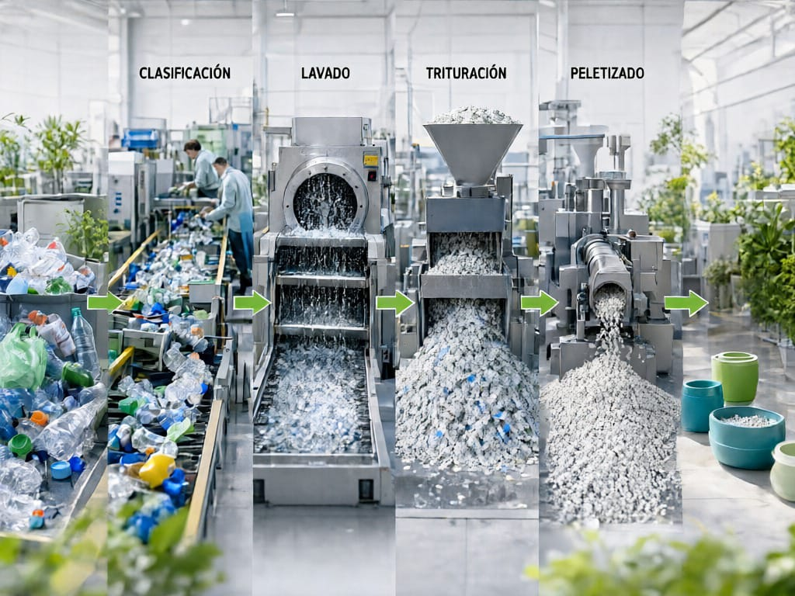
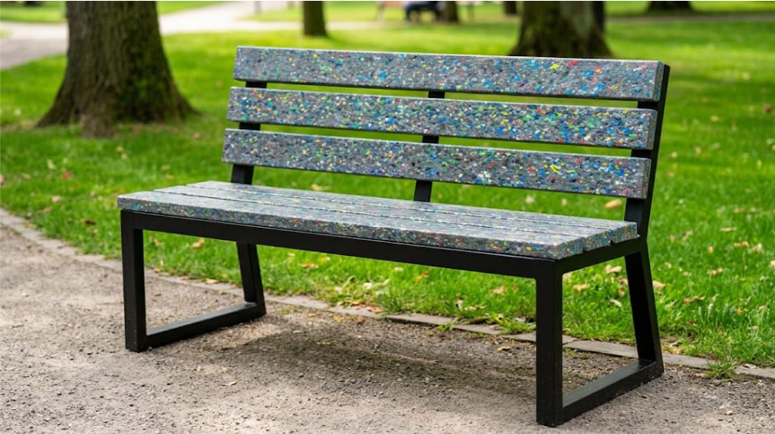

¿Cómo Transformamos el Plástico?

Paso 1: Recolección
Recolección de botellas y plásticos flotantes en las costas.

Paso 2: Procesamiento
Limpieza, triturado y conversión en materia prima reciclada.

Paso 3: Fabricación
Fabricación de productos como bancas urbanas y macetas.